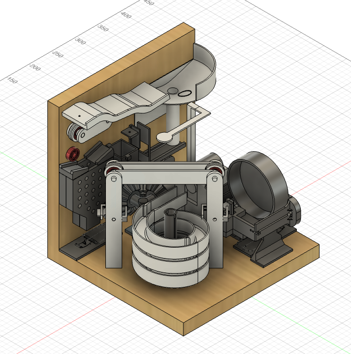
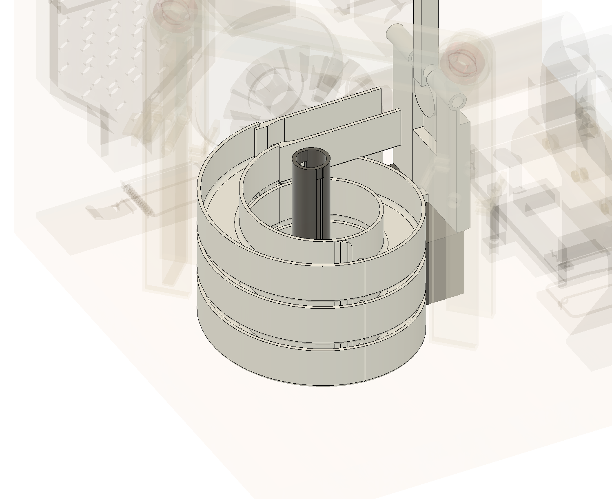
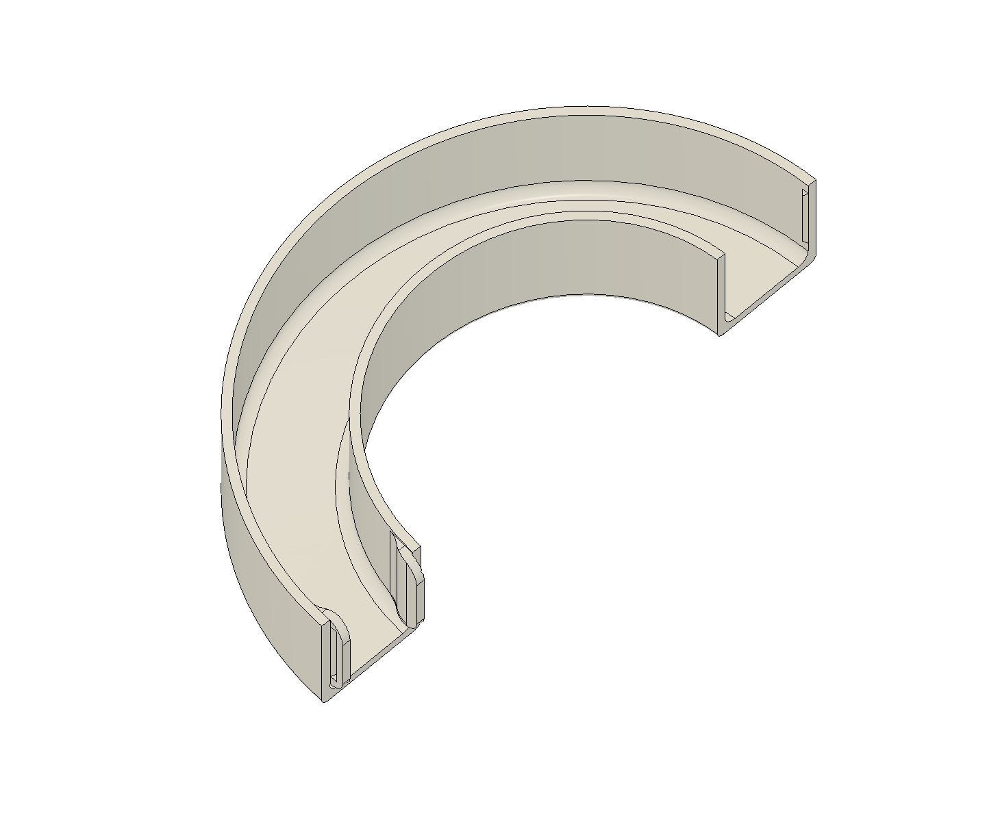
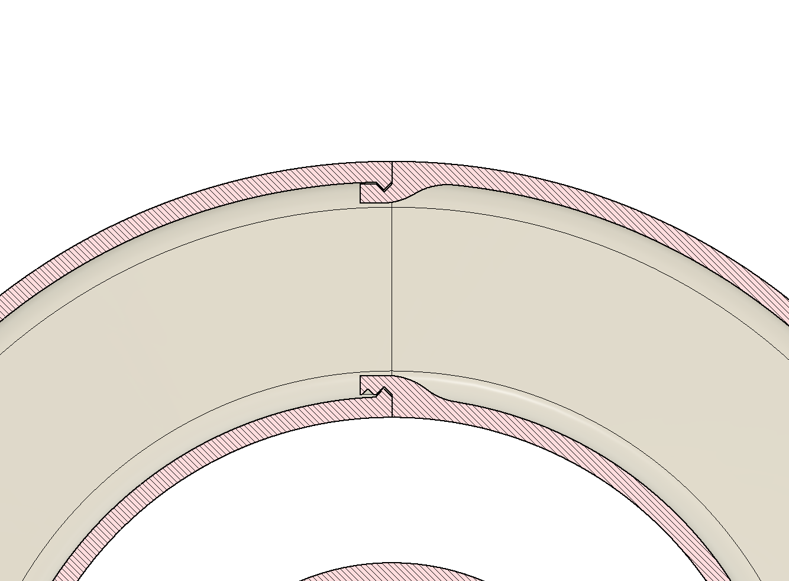
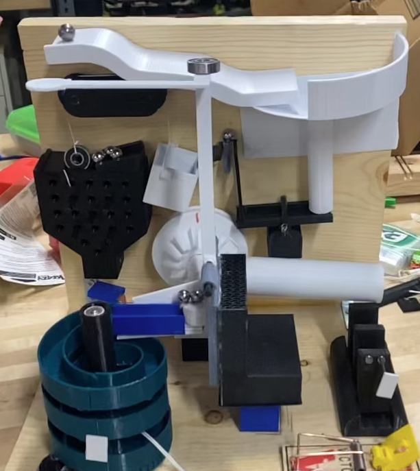
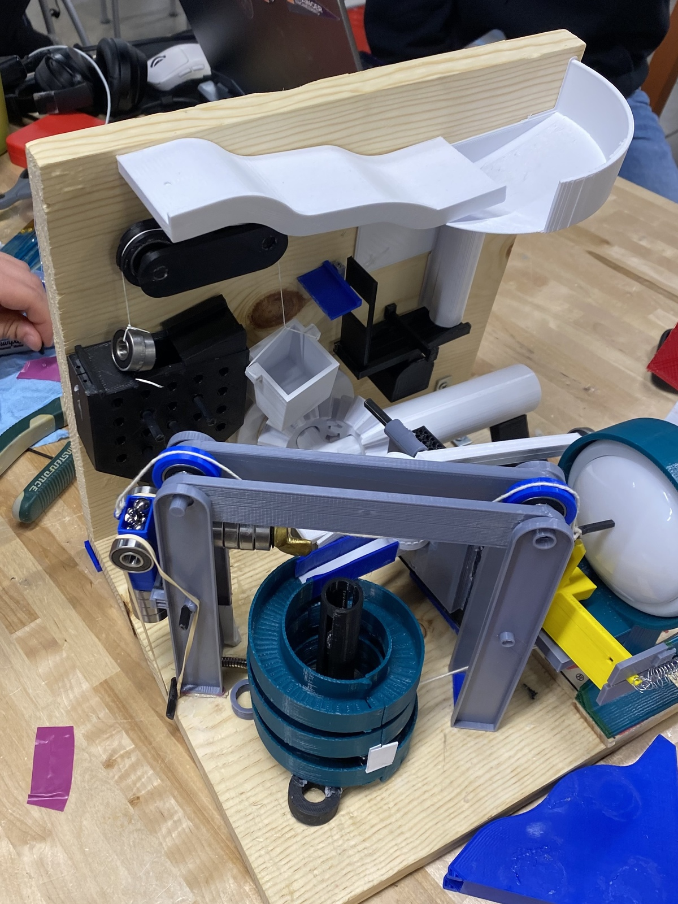

Inspired by Rube Goldberg, this ME 270 Design for Manufacturability project challenged teams of 3–5 students to design and build a themed machine that turns on a battery-powered LED light—starting with a marble. Using a provided base plate, side plate, brackets, marble, and light, we manufactured nearly all components ourselves while meeting tight size and mechanism requirements.
Rube Goldberg Machine — ME 270 (Design for Manufacturability)

- Role
- Team Member (Mechanical Design + Fabrication)
- Skills
- Design for Manufacturability (DFM), Mechanism Design, Prototyping, Fabrication, Rapid Iteration, Mechanical Linkages, Motion Conversion (Rotary/Linear), Design Constraints, Team Collaboration
- Year
- 2022
Initial Design



The hardest challenge of the project was designing the 10-second step, which was a fundamental constraint of our Rube Goldberg machine. We chose to implement this step with a spiral staircase. However, during our first full 3D print, the support material was so extensive that after removal, the surface roughness and residual friction were high enough to prevent the ball from moving reliably.
To solve this, I changed the design approach and applied a design-for-manufacturability strategy using snap-fits. Instead of printing the staircase as one piece, I divided it into equal sections and added snap-fit features at each end so the parts could assemble together like Lego pieces. This redesign provided several advantages: it allowed us to parallelize fabrication across multiple 3D printers, reduced post-processing and support-removal effort, and improved the functional performance of the staircase. Ultimately, this manufacturing-driven redesign was what allowed our team to successfully achieve the required 10-second step.
Process

The project requirements forced careful system-level planning: the machine had to fit within a 30 cm × 30 cm × 30 cm envelope and include at least 10 mechanically distinct “steps.” Both rotary and linear motion were required, and the design needed to incorporate rigid linkages, string-driven motion, and an elastic element.
To keep the build manufacturable, teams were limited to mousetraps plus only one other commercial product—everything else had to be made. We designed the sequence around reliable handoffs between stages (gravity-driven marble motion, constrained guides, trigger interfaces, and motion conversion), then iterated on geometry and tolerances to prevent stalls and misfires.
Outcome

The final machine successfully converted a marble start into a light-on finish while satisfying the course constraints: compact size, themed design, 10+ distinct steps, and required motion/element types (rotary + linear, rigid linkages, string, and elasticity). The project culminated in a live demonstration at the Lu Mechanical Engineering Building.